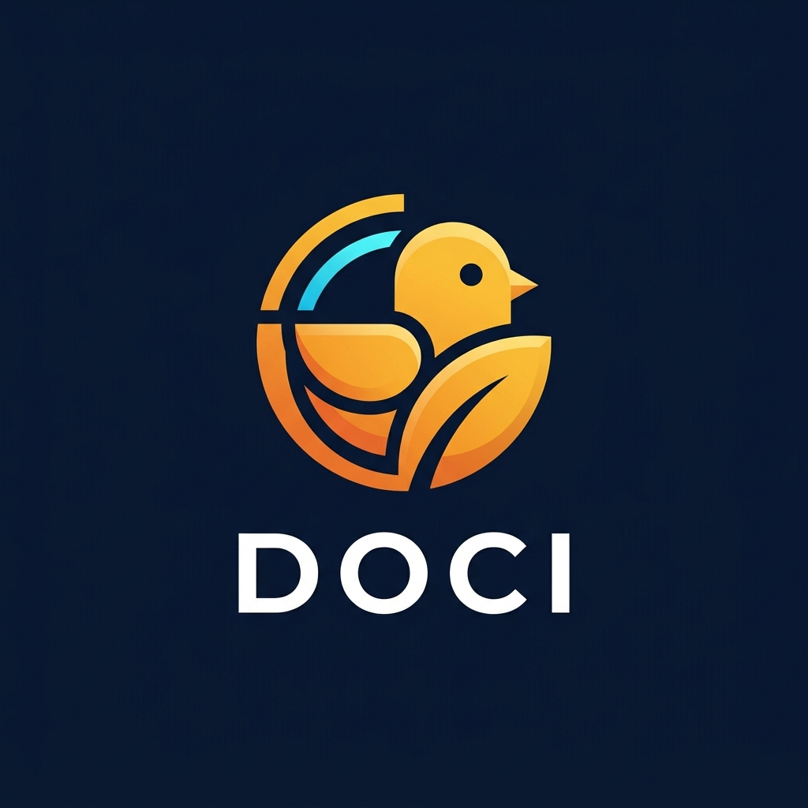

DOC Intelligence Assistant — Transparan. Cerdas. Berkelanjutan.
Siluet geometris bersih & kurva data pintar.

Kombinasi modern agritech leaf & siluet anak ayam.
Untuk website, dashboard & aplikasi.
Untuk dokumen PDF, proposal cetak & latar putih.